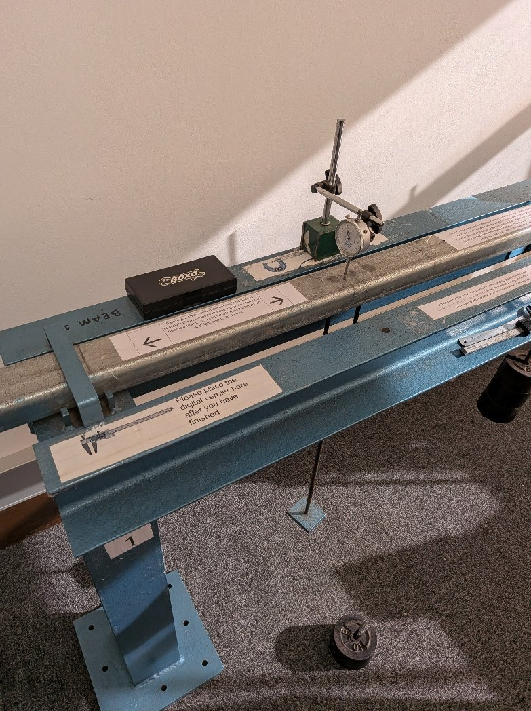
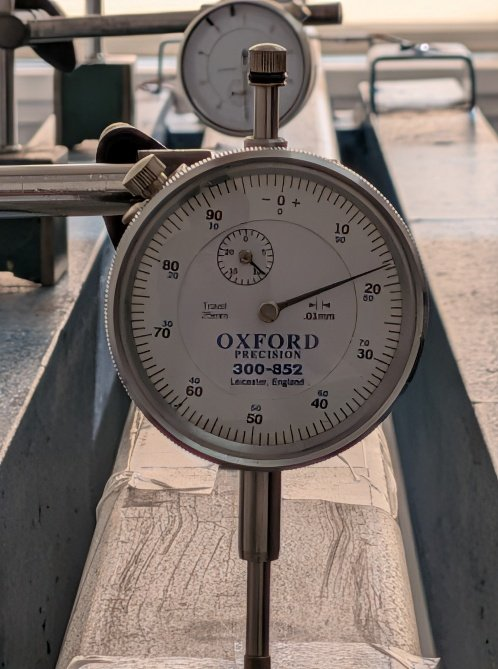
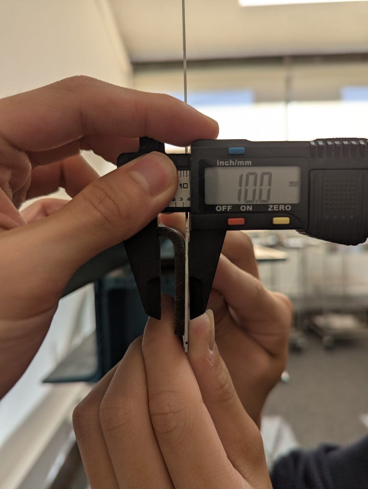
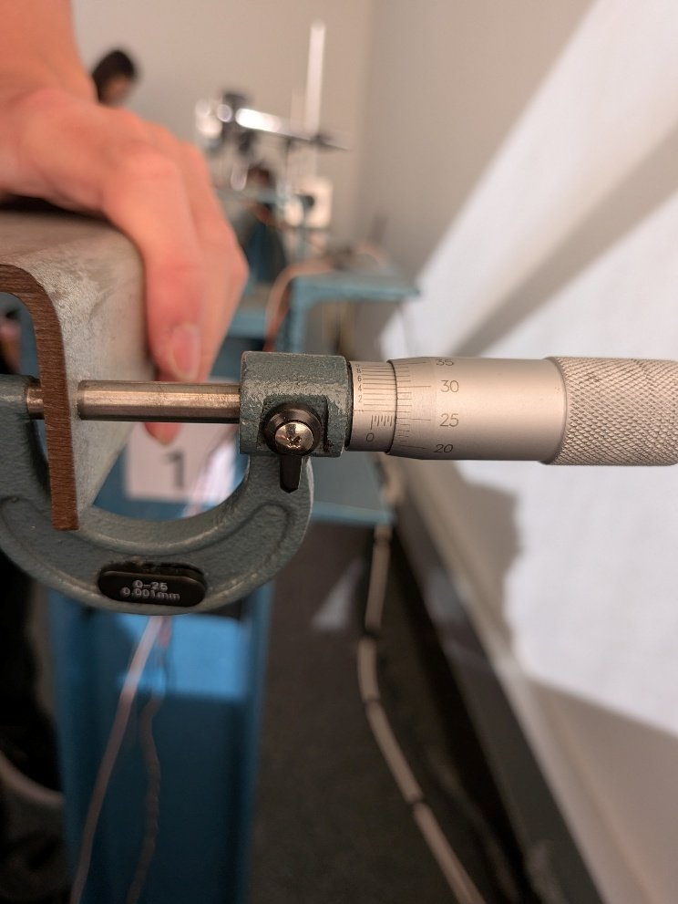
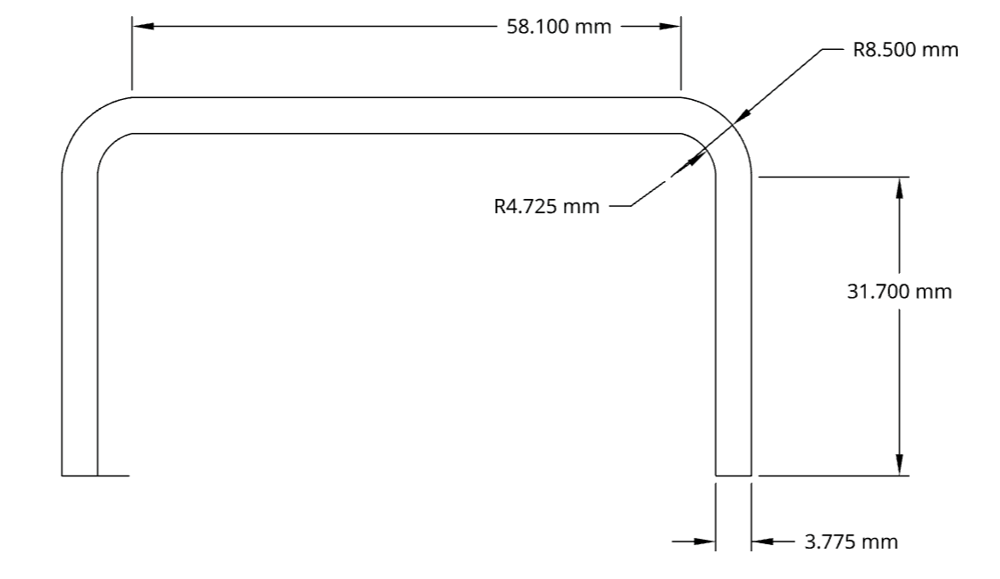
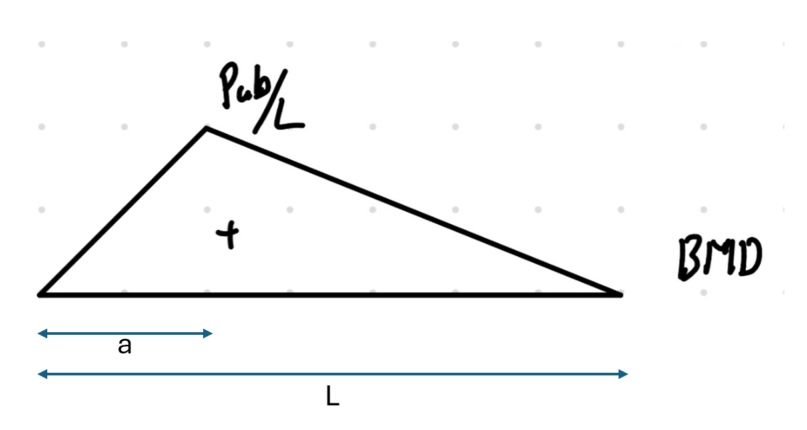

Testing & Materials
Steel C-Channel Beam Deflection Analysis

Project overview
Measured deflection versus beam theory.
An experimental and analytical study of a simply supported steel C-channel under an asymmetric point load, comparing dial-gauge deflections with derived beam-theory predictions.
For CIVL2201 Structural Mechanics, a steel C-channel was loaded at Hook 1 (a = 468 mm from the left support) in 10 lb (44.5 N) increments up to 222.5 N and back down, with dial gauges recording vertical deflection at Hook 1 and near midspan at Hook 2 (z ≈ 1228 mm). The cross-section was measured with a vernier, ruler, and micrometer, including the corner radius.
I calculated the second moment of area two ways: an idealized square-cornered section (0.0871 × 106 mm4) and the real section with quarter-annulus rounded corners (0.0844 × 106 mm4), deriving the corner inertia from the parallel axis theorem. From the bending moment diagram and boundary conditions I derived the deflection expression for a simply supported beam with a point load at any position, then compared the theoretical and measured load-deflection curves.
Key work & outcomes
- Measured peak deflections of 1.38 mm at Hook 1 and 1.99 mm at Hook 2 under the 222.5 N maximum load.
- Load-deflection response was linear (R2 ≥ 0.998) with full elastic recovery on unloading.
- Predicted every deflection within 10% of measurement (maximum 9.01% at Hook 1 and 9.77% at Hook 2).
- Derived closed-form deflection and bending-moment expressions and rounded-corner section properties.
Evidence
Design, Testing & Analysis
Test setup, measurements, and analysis from the laboratory report.






Continue exploring